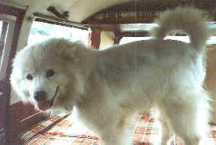

Larry Ayers
Larry Ayers
Michael J. Hammel
Phil Hughes
Henry H. LuHenry H. Lu has a M.S. of Biophysics, University of Minnesota and a B.S. of Physics, Nankai University. He is currently working as contract bioinformatics analyst in HIV database of Los Alamos National Lab in New Mexico USA, and has developed Java / HTML, C/C++, perl, shell applications and system tools for work (Solaris environment) at home Linux box or remote login to workstation at Lab. For fun, he likes to hack some of systems/networking programs, use Linux to learn on-line university courses (Operating systems / system programming, Network), and write Java/HTML for my own web page.
Manuel Soriano
Nic TjirkalliNic Tjirkalli is currently employed as a Customer Consultant/Technical Support Person for UUNET Internet Africa, South Africa's leading Internet Service Provider, situated somewhere in Johannesburg, South Africa. One of his current focus areas is Internet security--encompassing firewalls and packet filtering on routers. He is a fan of Linux, the art of Salvador Dali, cartoons and heavy metal, in particular, a German group called Helloween. His home page, where I got this information and which you can access from his article, is very interesting.
I must say that after 2 months of being the Editor of the Gazette, I am still having fun, and judging from the mail I think you guys, our readers, are too. John Fisk is right--the Gazette is a lot of work, and worth every bit of it.
Thanks to all our authors, not just the ones above, but also those who wrote giving us their tips and tricks and making suggestions. Thanks also to our new mirror sites. I get more mail about mirrors than just about anything, except maybe readers wanting the Gazette to be available as one big file. We are providing that this month along with the separate page format. (See The Whole Damn Thing in the Table of Contents.) Doing the Gazette in multi-file format is just the easiest way for me to build the magazine. I've tried to be responsive to all mail and reasonable requests. If I missed you, send your mail again, and I'll get back to you.
The most important thing I'm working on outside of work these days is definitely "not Linux". I'm making a baby quilt for a friend of mine in Houston. The baby is 2 months old now, and if I don't get it finished soon, it will be too small for her to use. The geometry, as well the art, of quilting has always fascinated me--must have to do with being a math person.
If you would like some personal information about me, clicking on my name below will take you to my home page. It's not very jazzy at the moment, but I'm looking for the time to fix it up.
Marjorie L. Richardson
Editor, Linux Gazette gazette@linuxgazette.net
![[ TABLE OF
CONTENTS ]](../gx/indexnew.gif)
![[ FRONT
PAGE ]](../gx/homenew.gif)

Linux Gazette, http://linuxgazette.net/
This page written and maintained by the Editor of Linux Gazette,
gazette@linuxgazette.net